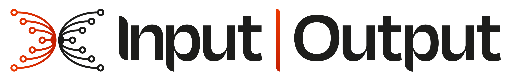

A verifiable communication layer for the Cardano ecosystem
A Cardano-anchored publish/subscribe layer for authenticated ecosystem communication: identifiable publishers, verifiable events, on-chain registered topics, and an economic cost to creating publisher identities.
Critical communication deserves the same guarantees as transactions
Today these messages travel over social platforms and chat servers, open to impersonation. PubSub brings them under Cardano's trust guarantees.
Emergency alerts for node operators
Node builders — teams like IOG, Amaru, and the Cardano Foundation — reach node operators with authenticated emergency and operational alerts.
SPO-to-delegator communication
Stake pool operators reach their delegators through a topic that provably belongs to the pool.
dRep-to-delegator communication
dReps share voting intent and rationale with the delegators they represent under CIP-1694.
dApp-to-user announcements
dApps reach their users with critical alerts and per-user notifications, published under on-chain identities with spam resisted by real stake.
From proposed design to evidence-based architecture
SecureCyclon published
Antonov & Voulgaris publish SecureCyclon at ICDCS 2023 — a peer-sampling protocol with defences against protocol-violating peers, proposed as the decentralised foundation the PubSub workstream would build on.
Exploratory research
Use-case and requirements analysis, cryptographic key-material study, and formal plus empirical analysis of the proposed peer-sampling foundation. The analysis surfaced silent attack vectors — adversaries can bias nodes' views of the network without triggering any of the protocol's defences — which led to the sampling layer being set aside in favour of an on-chain, list-based design.
Empirically-driven architecture
Five candidate dissemination models, from simple push to hybrid designs, analysed formally and measured empirically against a silent Byzantine adversary — so the final design is the one the data supports, not the one intuition favours. A Rust prototype node implements topics, subscriptions, publishing, and fan-out forwarding, backed by a deterministic simulation framework for controlled experiments.
Hardening & ecosystem integration
A design proposal consolidates the analytical and experimental findings into a concrete architecture recommendation — published as a CIP if phase 2 time permits. The scope beyond that is still taking shape; candidates include a fee-and-incentive model that rewards honest participation, real network transport in the prototype node, a public testnet, and — on the research side — decentralised peer sampling at scales where the on-chain list no longer suffices.
Five candidate models, one bar
We are not proposing a dissemination design — we are deriving one. All five models face the same bar: every honest publisher's message reaches every honest node, despite silent Byzantine peers.
Contributions over the last 6 months
Read more
The latest R&D progress deck: findings from the exploratory phase and the plan for the empirically-driven architecture.
July 2026 Source repository Open-sourcing soonThe Rust prototype node, simulation framework, formal specifications, and analysis reports — currently private, to be opened.
GitHub Research logbook Public soonThe running day-by-day record of the research: decisions, experiments, and milestones as they happen — public once the repository opens.
Ongoing